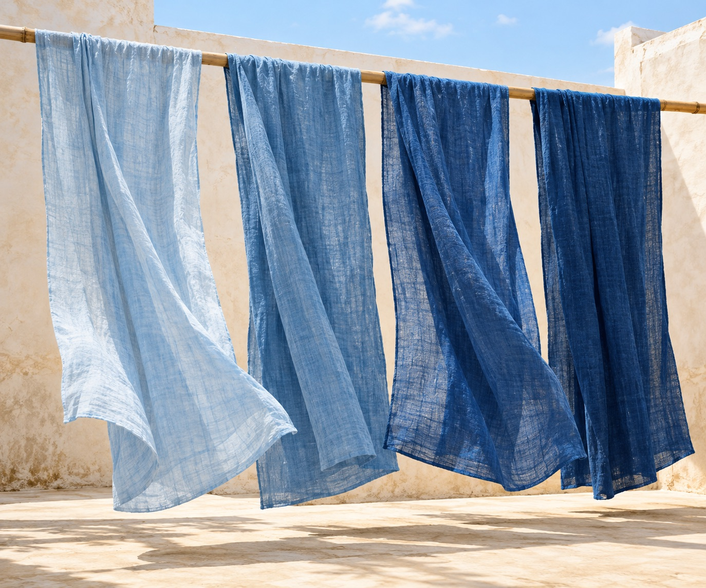

Everyday indigo · Collection 01
Twenty dips. One indigo.

Four simple pieces. A colour that deepens with every dip, then softens with every day you wear it.
Explore the collectionThe shades of indigo01 — 20
The collection / 01
Made to live in.
A jacket, a set, two scarves.
Different ways to carry a little indigo.

A colour, slowly made
Dip. Air.
Begin again.
Cloth leaves the vat green, meets the air and turns blue. Back into the vat, out into the light. A little deeper each time.
Slide from light to deep.
8 dipsMid
Better with time
A little more
yours, every day.
Indigo keeps changing after it leaves the vat. Wear it, wash it, and the blue becomes yours.
Back to the pieces